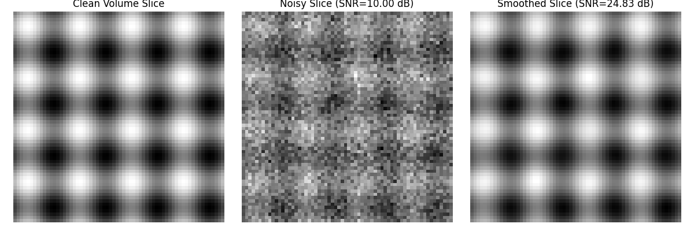

3D Volume Smoothing#
We use the smooth module to smooth N-dimensional data.
Imports#
import numpy as np
import matplotlib.pyplot as plt
from splineops.denoise.smoothing_spline import smoothing_spline_nd
Sinusoid 3D Data#
def demo_3d_sinusoid():
# Desired cutoff frequency
cutoff_freq = 0.1 # Adjusted cutoff frequency
gamma = 2.0 # Order of the spline operator
# Compute lambda_ based on cutoff frequency
lambda_ = (1 / (2 * np.pi * cutoff_freq)) ** (2 * gamma)
snr_db = 10.0 # Desired SNR in dB
# Create a 3D clean volume (sinusoid)
x = np.linspace(0, 1, 64)
y = np.linspace(0, 1, 64)
z = np.linspace(0, 1, 64)
X, Y, Z = np.meshgrid(x, y, z, indexing='ij')
clean_volume = np.sin(8 * np.pi * X) + np.sin(8 * np.pi * Y) + np.sin(8 * np.pi * Z)
clean_volume = (clean_volume - clean_volume.min()) / (clean_volume.max() - clean_volume.min()) # Normalize to [0, 1]
# Add noise
signal_power = np.mean(clean_volume ** 2)
sigma = np.sqrt(signal_power / (10 ** (snr_db / 10)))
noise = np.random.randn(*clean_volume.shape) * sigma
noisy_volume = clean_volume + noise
# Apply smoothing spline
smoothed_volume = smoothing_spline_nd(noisy_volume, lambda_, gamma)
# Compute SNRs
snr_noisy = compute_snr(clean_volume, noisy_volume)
snr_smoothed = compute_snr(clean_volume, smoothed_volume)
snr_improvement = snr_smoothed - snr_noisy
print("3D Sinusoid Volume:")
print(f"SNR of noisy volume: {snr_noisy:.2f} dB")
print(f"SNR after smoothing: {snr_smoothed:.2f} dB")
print(f"SNR improvement: {snr_improvement:.2f} dB\n")
# Visualize one slice of the volume (middle slice)
slice_index = clean_volume.shape[2] // 2
plt.figure(figsize=(12, 4))
plt.subplot(1, 3, 1)
plt.imshow(clean_volume[:, :, slice_index], cmap='gray')
plt.title('Clean Volume Slice')
plt.axis('off')
plt.subplot(1, 3, 2)
plt.imshow(noisy_volume[:, :, slice_index], cmap='gray')
plt.title(f'Noisy Slice (SNR={snr_noisy:.2f} dB)')
plt.axis('off')
plt.subplot(1, 3, 3)
plt.imshow(smoothed_volume[:, :, slice_index], cmap='gray')
plt.title(f'Smoothed Slice (SNR={snr_smoothed:.2f} dB)')
plt.axis('off')
plt.tight_layout()
plt.show()
def compute_snr(clean_signal, noisy_signal):
"""
Compute the Signal-to-Noise Ratio (SNR).
Parameters:
clean_signal (np.ndarray): Original clean signal.
noisy_signal (np.ndarray): Noisy signal.
Returns:
float: SNR value in decibels (dB).
"""
signal_power = np.mean(clean_signal ** 2)
noise_power = np.mean((noisy_signal - clean_signal) ** 2)
snr = 10 * np.log10(signal_power / noise_power)
return snr
# Run the 3D sinusoid demo
demo_3d_sinusoid()

3D Sinusoid Volume:
SNR of noisy volume: 10.00 dB
SNR after smoothing: 24.83 dB
SNR improvement: 14.83 dB
Total running time of the script: (0 minutes 0.158 seconds)